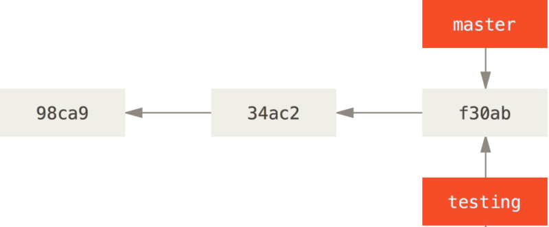
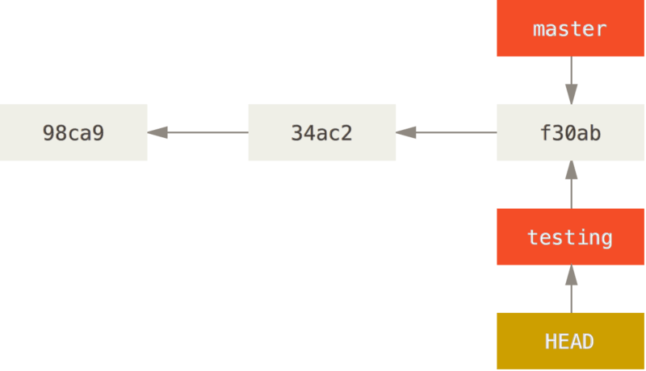
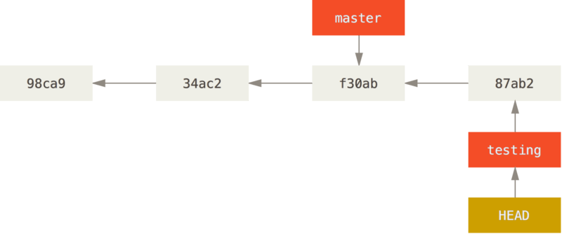
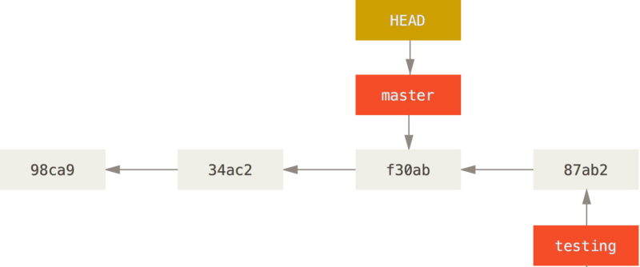

Ramas
Ramas o branches¶
Las ramas son caminos que puede tomar el desarrollo de un software, algo que ocurre naturalmente para resolver problemas o crear nuevas funcionalidades. En la práctica permiten que nuestro proyecto pueda tener diversos estados y que los desarrolladores sean capaces de pasar de uno a otro de una manera ágil. Cuando inicializamos un proyecto con Git automáticamente nos encontramos en una rama a la que se denomina master.
La rama master
La rama master en Git no es una rama especial. Es como cualquier otra rama. La única razón por la cual aparece en casi todos los repositorios es porque es la que crea por defecto el comando git init y la gente no se molesta en cambiarle el nombre.
Trabajando con ramas locales¶
Podemos gestionar ramas en git en nuestro equipo
Crear una rama nueva¶
¿Qué sucede cuando creas una nueva rama? Simplemente se crea un nuevo apuntador para que lo podamos moverlo libremente. Por ejemplo, supongamos que queremos crear una rama nueva denominada testing. Para ello, ejecutaremos el comando:
git branch testing
Esto creará un nuevo apuntador apuntando a la misma confirmación donde estemos actualmente.

Y, ¿cómo sabe Git en qué rama estamos en este momento? Mediante un apuntador especial denominado HEAD. Este apuntador se ubica en la rama local en la que estemos en ese momento, en este caso la rama master; pues el comando git branch solamente crea una nueva rama, y no salta a dicha rama.

Crear una rama a partir de una confirmación anterior¶
Es posible crear una rama a partir de un commit determinado. Para ello, deberemos conocer de antemano el número de hash del commit en cuestión y ejecutar:
git checkout -b [ramaNueva] [numeroDeHash]
Por ejemplo:
git checkout -b prueba 56a4e5c08
git checkout master && git merge prueba && git branch -d prueba
Cambiar de Rama¶
Para saltar de una rama a otra, tenemos que utilizar el comando git checkout. Hagamos una prueba, saltando a la rama testing recién creada:
git checkout testing
Esto mueve el apuntador HEAD a la rama testing.

Observamos algo interesante: la rama testing avanza, mientras que la rama master permanece en la confirmación donde estaba cuando lanzaste el comando git checkout para saltar.

Volvamos ahora a la rama master:
git checkout master

Saltando entre ramas
Es importante destacar que cuando saltas a una rama en Git, los archivos de tu directorio de trabajo cambian. Si saltas a una rama antigua, tu directorio de trabajo retrocederá para verse como lo hacía la última vez que confirmaste un cambio en dicha rama. Si Git no puede hacer el cambio limpiamente, no te dejará saltar.
Ahora el historial de nuestro proyecto diverge. Hemos creado una rama y saltado a ella, hemos trabajado sobre ella; hemos vuelto a la rama original, y hemos trabajado también sobre ella. Los cambios realizados en ambas sesiones de trabajo están aislados en ramas independientes: podemos saltar libremente de una a otra según estimemos oportuno.
Tip sobre la creación de ramas
Para crear una nueva rama y saltar a ella, en un solo paso, podemos utilizar el comando:
git checkout -b nuevaRama
Eliminar una rama¶
Para borrar una rama utilizamos el sencillo comando:
git branch -d ramaABorrar
Fusionar ramas¶
Es probable que luego de un tiempo de trabajar sobre una rama que hallamos creado quisiéramos fusionarla con la rama principal. Para ello, debemos asegurarnos de estar posicionandos en la rama principal (comunmente llamada master) y ejecutar el comando:
git merge ramaAFusionar
Tabajando con ramas remotas¶
Hasta aquí, todo el trabajo con las ramas se ha hecho de modo local, es decir, en nuestro equipo.
Publicar una rama¶
Para publicar nuestra rama local en el servidor remoto, tenderemos que ejecutar el siguiente comando:
git push <nombreRepositorioRemoto> <rama>
git push origin master
git push --all <nombreRepositorioRemoto>
Superpush
El comando:
git push --all <nombreRepositorioRemoto>
Eliminar una rama¶
Aunque hayamos elminado la rama de forma local, deberemos hacerlo también de manera remota:
git push <nombreRepositorioRemoto> --delete <rama>
git push origin --delete master
Estudio de caso: uso de ramas¶
Vamos a presentar un ejemplo simple de ramificar y de fusionar, con un flujo de trabajo que se podría presentar en la realidad. Imagina que sigues los siguientes pasos:
-
Trabajamos en un sitio web.
-
Creamos una rama para un nuevo tema sobre el que queremos trabajar.
-
Realizamos algo de trabajo en esa rama.
En este momento, recibimos una llamada avisándonos de un problema crítico que tenemos que resolver. Y seguimos los siguientes pasos:
-
Volvemos a la rama de producción original.
-
Creamos una nueva rama para el problema crítico y lo resolvemos trabajando en ella.
-
Tras las pertinentes pruebas, fusionamos (merge) esa rama y la enviamos (push) a la rama de producción.
-
Volvemos a la rama del tema en que andabas antes de la llamada y continuamos tu trabajo.